TYPOGRAPHY
Display & Text
Three different italic serif display treatments showed up across what Arielle has shared, all documented below. On 2026-09-24 she flagged that look directly: it reads like a generic AI-generated site. The kit and the live site now run on Inter throughout instead, italic for display and upright for labels and body.
Wordmark · consistent across the crest banner, the horizontal lockup, and the "GodWave Golf" logotype
GodWave
A refined italic serif with a swashed double-story "G" and flowing crossbar on the "W". This exact letterform repeats across every official lockup Arielle has shared, so it reads as a real, consistent typeface choice rather than a one-off. No flat/vector file of it exists yet, only photographs of finished lockups, which is worth closing directly with whoever designed it.
Headline · used today only as AI-generated title images
When two or more gather.
Bolder and heavier than the wordmark above: a high-contrast italic serif with the same calligraphic flare and ball terminals, but thicker strokes built for full sentences. Seen in "GodWave Tournament," "God. Golf. Giving.," and "When two or more gather." Each one is generated as a flat image in ChatGPT, never as live, editable text, so no two headlines are guaranteed to match.
Decided 2026-09-24: Inter, italic, replaces this treatment on the live site and in this kit. Free, resizable, real text instead of another round of image generation, and it does not read as an AI-site cliche the way the serif italic candidates below did.
Considered, then dropped 2026-09-24: Fraunces Black Italic
Considered, then dropped 2026-09-24: Canela Bold Italic
Considered, then dropped 2026-09-24: GT Sectra Display Bold Italic

A third treatment, shared 2026-09-23: the same "God. Golf. Giving." line, but upright rather than italic. Kept here for the record. Since neither serif treatment made it into the final decision above, the italic-versus-upright question is moot for the website, though it may still matter for future print or social graphics that reuse this exact line.
Supporting sans · eyebrows, labels, body copy
PARTNERSHIP OPPORTUNITIES · INVITE ONLY · EST. 2026
A clean, wide-tracked sans used at low weight for labels and structured copy throughout the deck. Locked in as Inter (free) 2026-09-23, wired into both this kit and the website build.